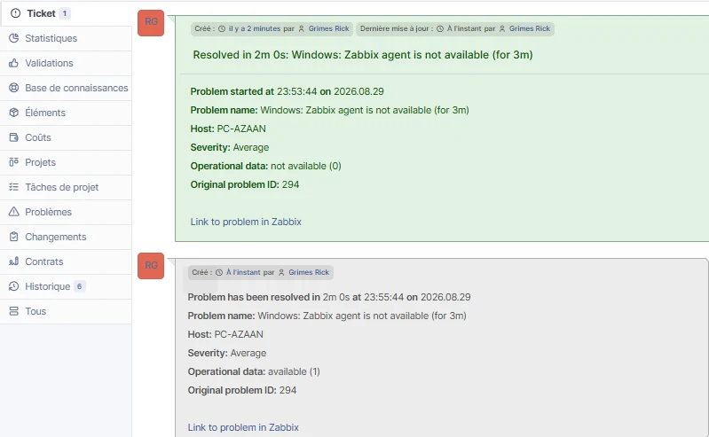

Automatisation des incidents Zabbix → GLPI
Intégration de la supervision Zabbix au Helpdesk GLPI par API REST et webhook. Une indisponibilité détectée sur PC-AZAAN crée automatiquement un ticket, puis la récupération met à jour ce même incident et le passe à l’état Résolu.

Relier supervision et ITSM
Le mini-projet prolonge les laboratoires Zabbix et GLPI : ZABBIX-SRV01 supervise le poste Windows PC-AZAAN avec Zabbix Agent 2, tandis que GLPI-SRV01 gère les incidents. L’objectif est d’automatiser le passage d’un événement technique vers un ticket Helpdesk, sans saisie manuelle.
Supervision
Zabbix 7.0.29 détecte l’indisponibilité de Zabbix Agent 2 sur PC-AZAAN grâce à un trigger dédié.
API & sécurité
GLPI REST Legacy, client API limité à 192.168.89.10, App-Token et User Token masqués dans les preuves.
Automatisation
Le média GLPI natif de Zabbix exécute le webhook lors du problème puis lors de la récupération.
App-Token, User Token et Session Token
Avant d’activer le webhook, l’API a été validée manuellement depuis ZABBIX-SRV01. Cette étape permet de séparer les problèmes réseau des erreurs d’authentification.
Identifie le client API « Zabbix » déclaré dans GLPI. Le client est limité à l’adresse IPv4 192.168.89.10.
Authentifie le compte GLPI utilisé par l’intégration et porte les droits permettant la création et la mise à jour des tickets.
Jeton temporaire renvoyé par GLPI après un appel initSession réussi. Il confirme que l’authentification fonctionne.
read -s afin de ne pas afficher les tokens à l’écran.Configuration et validation de bout en bout
Les captures ci-dessous montrent la configuration côté GLPI et Zabbix, puis le cycle complet de l’incident. Cliquez sur une image pour l’agrandir.
1. API GLPI & authentification
API REST Legacy activée
Le mode Legacy est conservé pour ce laboratoire car le type de média GLPI de Zabbix est configuré avec glpi_legacy_api = true.
Client API dédié à Zabbix
Le client « Zabbix » est actif et limité à l’unique adresse IPv4 de ZABBIX-SRV01 : 192.168.89.10. L’App-Token est masqué.
- Réduction de la surface d’accès à l’API.
- App-Token utilisé comme secret applicatif.
Jeton API utilisateur
Le User Token est généré depuis la fiche de l’utilisateur GLPI utilisé par l’intégration. Sa valeur n’est jamais publiée.
2. Webhook & action Zabbix
Type de média GLPI
Le webhook natif est utilisé sans modifier son script. Les quatre paramètres essentiels sont renseignés : URL GLPI, mode Legacy, App-Token et User Token.
glpi_url = http://192.168.90.20glpi_legacy_api = trueglpi_app_tokenetglpi_user_tokenmasqués.
Action problème + récupération
L’action cible uniquement le trigger d’indisponibilité de PC-AZAAN. Le média GLPI est appelé immédiatement lors du problème et une seconde fois lorsque le trigger repasse à OK.
3. Cycle incident → résolution
Indisponibilité détectée
Après trois minutes, le trigger Windows: Zabbix agent is not available passe en PROBLÈME. L’historique des actions confirme l’envoi vers GLPI.
Ticket GLPI créé automatiquement
GLPI ouvre le ticket correspondant au problème Zabbix au statut Nouveau et avec une priorité Moyenne. Aucune saisie manuelle n’est nécessaire.
Retour à l’état nominal
Après redémarrage de Zabbix Agent 2, Zabbix reçoit à nouveau les métriques, enregistre la récupération et exécute l’opération GLPI de recovery.
Même ticket passé à Résolu
Le webhook retrouve l’incident d’origine, ajoute l’information de récupération puis fait passer le ticket à l’état Résolu. Le détail conserve l’hôte, la sévérité, l’Original problem ID et le lien vers Zabbix.
Compétences démontrées
API REST & Linux
Tests depuis ZABBIX-SRV01 avec curl, compréhension de l’authentification par tokens et diagnostic d’erreurs d’accès.
Zabbix & automatisation
Webhook, type de média, macro globale, action ciblée, opération de problème et opération de récupération.
ITSM & sécurité
Création et mise à jour d’incidents GLPI, restriction du client API par IP et gestion prudente des secrets.
Consulter le dossier technique complet
Le PDF détaille l’architecture, l’API GLPI, les rôles des trois jetons, les tests depuis ZABBIX-SRV01, le webhook, l’action Zabbix et les validations de bout en bout.